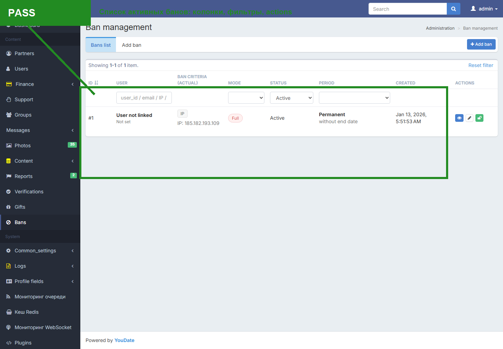
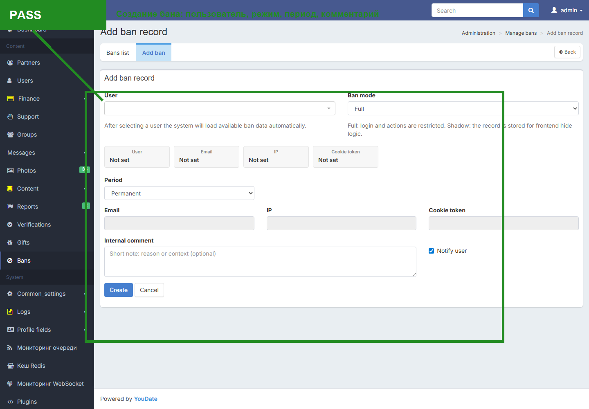
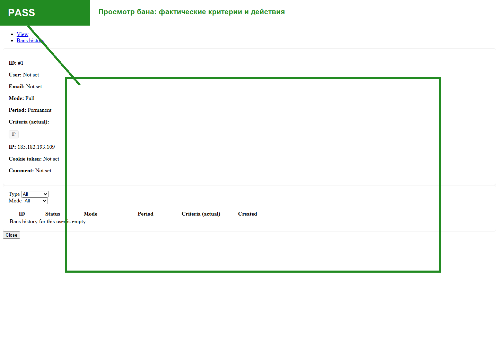

QA report · live Confideline · 2026-05-07
Проверка банов и теневого бана
Проверены live-экраны /en/admin/ban/index, /en/admin/ban/create, /en/admin/ban/view?id=1, user-data endpoint и cleanup тестовых пользователей. Поведенческий прогон shadow/full ban был запущен, но завис и не может считаться завершенным доказательством.
Факт: админские экраны банов доступны и содержат ожидаемые рабочие элементы: список активных банов, фильтры, колонки, действия View/Update/Release, экран создания и экран просмотра.
Важная граница: полный behavior-прогон через существующий автотест ban-behavior-audit.mjs завис после создания shadow-ban. Я остановил зависший процесс, снял оставшийся ban #16 с пользователя 165 и проверил active_ban_id=false. Поэтому текущий отчет не называет поведение shadow-ban полностью подтвержденным.
Сводка для Игоря
| Статус | Зона | Факт | Как найти / воспроизвести | Что делать |
|---|---|---|---|---|
| PASS | Список активных банов | Есть заголовок Ban management, Add ban, авто-фильтры, таблица с ID, USER, BAN CRITERIA, MODE, STATUS, PERIOD, CREATED, ACTIONS. В строке активного IP-бана показывается только фактический критерий IP. | Открыть /en/admin/ban/index; проверить верхнюю панель, фильтры и строку активного IP-бана #1. |
UI соответствует ТЗ по базовой структуре списка. |
| PASS | Действия списка | В активной строке есть View, Update, Release. Release имеет data-method=post. |
В строке активного бана на /en/admin/ban/index проверить три action-кнопки; inspect/DOM показывает data-method=post у Release. |
Подтвердить русские labels в финальной локализации, если интерфейс должен быть полностью русским. |
| PASS | Создание бана | Экран создания содержит выбор пользователя, режим Full/Shadow, период Permanent/Temporary, date range, комментарий, notify checkbox и автоподтянутые user/email/IP/cookie данные через endpoint. | Открыть /en/admin/ban/create; выбрать/найти пользователя 165; проверить, что user/email/IP/cookie подтягиваются автоматически и не выбираются вручную как критерии. |
Структура формы соответствует ТЗ. Ручного выбора критериев в UI не обнаружено, что соответствует логике "бан по всем доступным данным". |
| PASS | Просмотр бана | Экран просмотра открывается, показывает текущую запись и фактические критерии бана. | Из /en/admin/ban/index нажать View у активного бана #1; проверить ID, режим, период и фактический критерий IP. |
Проверить UX вкладки "История банов" отдельным прогоном с пользователем, у которого есть несколько снятых/активных банов. |
| BLOCKED | Полный behavior-прогон | Существующий автотест завис; fresh JSON с полным behavior-result не был записан. Диагностический probe без реально созданного shadow-ban показал доставку сообщения, но это invalid evidence, потому что active_ban_id=false. |
Запустить behavior-проверку шагами: создать shadow ban для U1 165; сначала доказать active_ban_id; затем U1 отправляет QA-сообщение U2 167; U2 открывает /en/messages и не должен видеть точный текст. |
Починить/разделить ban-behavior-audit.mjs: отдельный admin-create test, отдельный message/like test, явные step logs, обязательный cleanup в каждом шаге. |
| PASS | Cleanup | После зависшего прогона активный shadow-ban #16 был снят; user 165, 166, 167, 168 сейчас имеют active_ban_id=false. |
Открыть /en/admin/ban/create и дернуть /en/admin/ban/user-data?id=165/166/167/168; у всех должен быть active_ban_id=false. |
Не требуется, тестовые пользователи возвращены в рабочее состояние. |
Покрытие ТЗ
| Сценарий | Статус | Комментарий |
|---|---|---|
| Список банов: заголовок, Add ban, фильтры, таблица, действия | PASS | Подтверждено текущими скриншотами live UI. |
| Просмотр бана: карточка, критерии, режим, период | PASS | Подтверждено на активном IP-бане #1. |
| Добавить бан: user search, режим, период, comment, notify, auto criteria | PASS | Подтверждено по форме и user-data endpoint. |
| Full ban: вход/действия запрещены, после снятия восстановлены | ПОВТОРИТЬ | Был покрыт старым полным прогоном, но свежий полный прогон завис. Нужен новый current proof. |
| Shadow ban: U1 видит сайт, U2 не видит новые действия U1 | ПОВТОРИТЬ | Текущий завершенный proof отсутствует из-за зависшего автотеста. |
| Сообщения U1 -> U2 во время shadow-ban и после снятия | ПОВТОРИТЬ | Нужен повтор с реально созданным active_ban_id и проверкой получателя. |
| Лайки, favorites, visits, story/spotlight, photo access, gifts | НЕ ЗАКРЫТО | Не закрыто текущим прогоном. Это отдельные user-side сценарии с U1/U2. |
| Группы, посты, участники групп под shadow-ban | НЕ ЗАКРЫТО | Не закрыто текущим прогоном. Нужны подготовленные G1/G2/P1/P2. |
| Admin chat для U1 | НЕ ЗАКРЫТО | Не закрыто текущим прогоном. Нужен отдельный скрин admin chat до/во время/после. |
Доказательства со скриншотами



Что исправить в тест-контуре
Главная проблема сейчас не в том, что shadow-ban "не работает", а в том, что текущий полный автотест не дал завершенного current evidence. Следующий правильный шаг: разбить behavior-проверку на маленькие независимые прогоны с логом каждого шага и обязательным post-step cleanup.
Минимальный порядок следующего прогона: создать shadow-ban и доказать active_ban_id → U1 отправляет сообщение → U1 видит свое сообщение → U2 не видит точный текст → снять ban → U2 все еще не видит during-ban сообщение → новое сообщение после снятия доставляется.